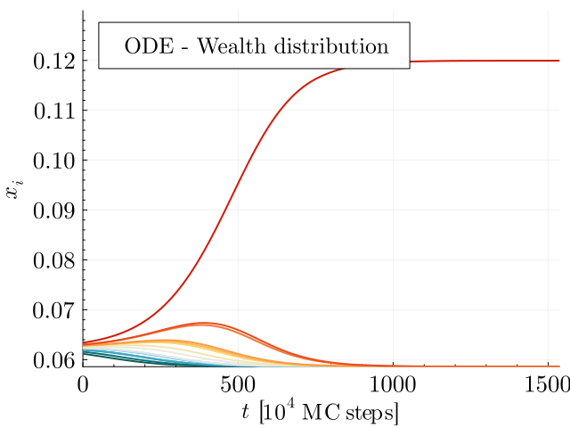
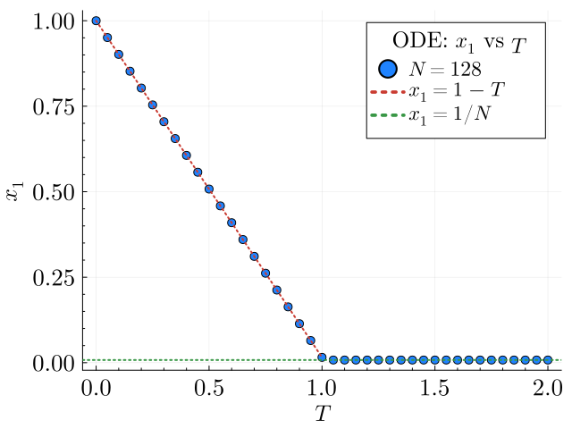

Import necessary packages
using DifferentialEquations, Graphs
using YardSale
using Plots, LaTeXStrings, ColorSchemesDescription of the model
Here we're going to use the functionalities of the ODE solver implemented in YardSale.jl. These are simple functions that wrap the DifferentialEquations.jl package to solve the ODE systems we're interested in. By wrapping, we are allowed to explore efficiently the parameters space.
The models we're going to explore belong to a wider class of models called Asset Exchange Models. These are models inspired in the statistical physics of interacting particles. The main idea is that agents exchange assets in a network, just like particles exchange energy in a physical system. The dynamics of the system is given by the exchange rules, which usually involve binary transactions. For a review of these models, see for example Greenberg, M., Gao, H.O. Twenty-five years of random asset exchange modeling. Eur. Phys. J. B 97, 69 (2024) DOI.
Here, we're studying specifically and ODE approximation of one of these models, called the "Extended Yard-Sale Model" (EYSM), published in Boghosian et al. (2017). Physica A, 476, 15-42 DOI. For details on the derivation of the equations please refer to our original paper.
Given a network $a$, the model is defined by the following set of ODEs:
\[\dot{x}_i = \frac{T}{N} \bigg(-\beta_i x_i+\frac{1}{N}\sum_j \beta_j x_j\bigg) + \sum_j\kappa_{ij}(x_i-x_j\min(x_i,x_j)\]
where $x_i$ represents the (expected) relative wealth of agent $i$, and $T$ represents the temperature. The parameters $\beta_i$ and $\kappa_{ij}$ are parameters which contain information about the network structure of $a$, and the way in which agents get taxed and interact with each other, respectively.
As described in the original paper, the EYSM exhibits a second-order phase transition as a function of the temperature $T$ when the network is a complete graph. This transition is characterized by the emergence of an oligarchy at low temperatures, where a few agents accumulate most of the wealth. At high temperatures, the wealth is more evenly distributed among the agents. The transition is characterized by the order parameter $x_1$ (the wealth of the richest agent) as a function of the temperature $T$. In the thermodynamic limit, the order parameter behaves as
\[x_1(T) = \begin{cases} 1 - T & \text{if } T \leq 1 \\ 0 & \text{if } T > 1\end{cases}\]
In this notebook, we're going to reproduce the phase transition of the EYSM in a complete graph, using the implementation of the ODE solver in YardSale.jl.
1. A first look at the model
Let's study the time evolution of the wealth distribution in the original EYSM. We'll set a system of few agents, and we'll plot the wealth of all agents as a function of time.
# Number of nodes
N = 16
# A complete graph with N nodes (Graphs.jl)
g = complete_graph(N)
# Interaction and taxation modes
interaction_mode = "A"
taxation_mode = "A"
# Temperature
T = 1.0
# Time span
tspan = (0.0, 30000)
dt = 10
# Seed
seed = 42
# Initial conditions
initial_conditions = "noisy" # Defaul, but you can also use "random", "custom", or "uniform"
;# Solve the system
sol = solve_ode_net(
g,
tspan,
interaction_mode,
taxation_mode,
T,
seed;
integrator = Tsit5(),
initial_conditions = initial_conditions,
saveat = dt
)
;# Get the time series of the state variables, sorted by final state
x_t = hcat(sol.u...)'[:, sortperm(sol.u[end])]3001×16 Matrix{Float64}:
0.0611785 0.0615817 0.0619628 … 0.0630102 0.0630252 0.0634045
0.0611742 0.0615783 0.0619606 0.0630128 0.0630278 0.0634091
0.0611699 0.0615749 0.0619584 0.0630154 0.0630305 0.0634137
0.0611656 0.0615715 0.0619563 0.063018 0.0630332 0.0634184
0.0611612 0.0615681 0.0619541 0.0630206 0.0630359 0.063423
0.0611569 0.0615646 0.0619519 … 0.0630232 0.0630386 0.0634277
0.0611526 0.0615612 0.0619497 0.0630258 0.0630413 0.0634324
0.0611482 0.0615577 0.0619475 0.0630285 0.063044 0.0634371
0.0611438 0.0615543 0.0619452 0.0630311 0.0630467 0.0634418
0.0611395 0.0615508 0.061943 0.0630338 0.0630495 0.0634466
0.0611351 0.0615473 0.0619408 … 0.0630365 0.0630522 0.0634513
0.0611307 0.0615438 0.0619385 0.0630392 0.063055 0.0634561
0.0611263 0.0615403 0.0619363 0.0630419 0.0630578 0.063461
⋮ ⋱ ⋮
0.0585937 0.0585937 0.0585937 0.058595 0.0585952 0.119949
0.0585937 0.0585937 0.0585937 … 0.058595 0.0585952 0.119949
0.0585937 0.0585937 0.0585937 0.058595 0.0585952 0.119949
0.0585937 0.0585937 0.0585937 0.058595 0.0585952 0.119949
0.0585937 0.0585937 0.0585937 0.058595 0.0585952 0.119949
0.0585937 0.0585937 0.0585937 0.058595 0.0585952 0.119949
0.0585937 0.0585937 0.0585937 … 0.058595 0.0585952 0.119949
0.0585937 0.0585937 0.0585937 0.0585949 0.0585952 0.119949
0.0585937 0.0585937 0.0585937 0.0585949 0.0585952 0.119949
0.0585937 0.0585937 0.0585937 0.0585949 0.0585952 0.119949
0.0585937 0.0585937 0.0585937 0.0585949 0.0585952 0.119949
0.0585937 0.0585937 0.0585937 … 0.0585949 0.0585951 0.119949# Rescale the time units to MC steps
t_mcs = rescale_t(sol.t,N)
;# Make the paper plot
p = plot(
ylabel = L"x_i",
xlabel = L"t"*" ["*L"10^{4}\;\mathrm{MC\;steps}]",
fontfamily = "Computer Modern",
legend_title = "ODE - Wealth distribution",
xguidefontsize = 17,
yguidefontsize = 17,
legendfontsize = 15,
legendtitlefontsize = 16,
xtickfontsize = 17,
ytickfontsize = 17,
palette = :tol_nightfall,
size=(640,480),
fmt=:png,
ylims = (:auto, 0.13),
xlims = (0,:auto),
minorticks = true
)
for i in 1:N
plot!(t_mcs ./ 1e4, x_t[:, i], label = "", lw = 2)
end
display(p)
2. Wealth of the richest agent as a function of the temperature (order parameter)
Next, we'd like to see the phase transition looking at the plot of the wealth of the richest agent $x_1$ as a function of the temperature $T$. We must run the simulation at different temperatures, record the wealth of the richest agent at the end of the simulations. We'll then plot the wealth of the richest agent as a function of the temperature. Notice that the simulations have an transient period, so we must run the simulations for a long enough time to ensure that the system has reached the steady state. For our purposes, a $t_{\text{max}} = 10^7$ should be enough. In any case, as we're not interested in intermediate times, we'll use a different solver, provided by the DifferentialEquations.jl package, which can search for the steady state of the system. That is what the solve_ode_net_SS function does.
We must increase the default tolerance of the integrator, because the system has critical behavior near the phase transition. We'll set the tolerante to $10^{-15}$.
# The system has to be big enough to discard finite size effects
N = 128
g = complete_graph(N)
# Interacion and taxation modes
interaction_mode = "A"
taxation_mode = "B"
# Time span
tspan = (0.0, 1e7)
# Different temperatures
temperatures = 0.0:0.05:2.0
# Seed
seed = 4242# Run simulations
x1_T = zeros(length(temperatures))
# Solve the system for different temperatures
for (i,T) in enumerate(temperatures)
sol = solve_ode_net_SS(
g,
interaction_mode,
taxation_mode,
T,
seed;
integrator = Tsit5(),
initial_conditions = initial_conditions,
reltol=1e-15,
abstol=1e-15
)
x1_T[i] = maximum(sol.u)
endp2 = plot(
ylabel = L"x_1",
xlabel = L"T",
fontfamily = "Computer Modern",
legend_title = "ODE: " * L"x_1" * " vs " * L"T",
xguidefontsize = 17,
yguidefontsize = 17,
legendfontsize = 15,
legendtitlefontsize = 16,
xtickfontsize = 17,
ytickfontsize = 17,
palette = :julia,
size=(640,480),
fmt=:png,
minorticks = true
)
p = scatter!(
p2,
temperatures,
x1_T,
label = L"N="*"$N",
ms = 5,
color = 1
)
p2 = plot!(p2,temperatures[1:21], x1_T[1:21], label=L"x_1 = 1 - T", lw = 2,ls=:dot,color=2)
p2 = hline!(p2,[1/N],label=L"x_1 = 1/N",lw=2,ls=:dot,color=3)